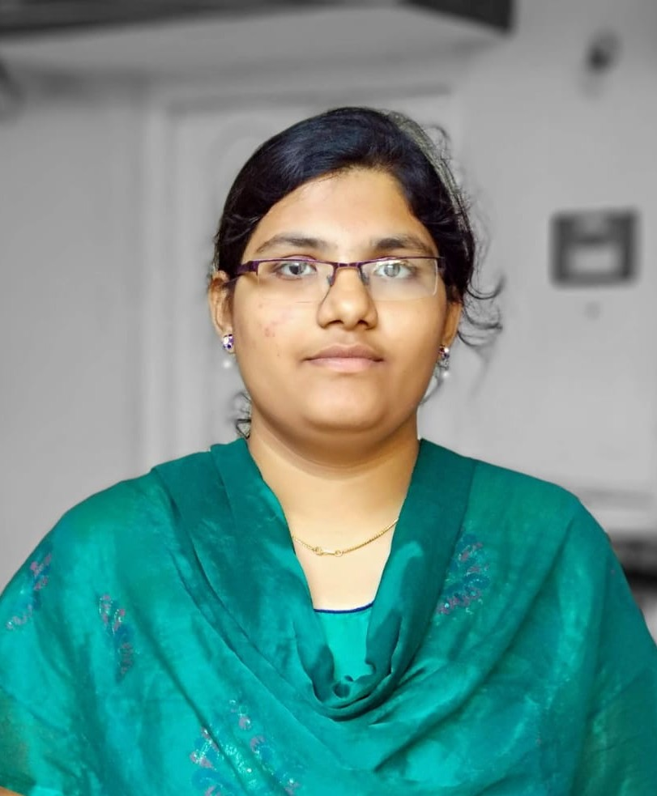

NAME: PIETY CHRISTIANA ROKKAM
Date of Birth: 25-01-1998
Qualifications: Doctor of Pharmacy, Nirmala College of Pharmacy
Color: White brown
Height: 162 cm
Christian Background: Indian Christian
Father: Sudhir Rokkam — Retired Railway Employee (Chief Ticket Inspector)
Mother: Hepsiba Koppula — Retired Bank Employee

Our Requirements
Looking for a God-fearing, Christ-centered man who leads with humility, integrity,
and love. desire is to build a marriage grounded in prayer, faith, and service to the Lord.
About Our Family Background
We are a happy, God-fearing family with both parents retired,younger brother - HENRY SAMUEL and elder brother - ABHI STEPHEN.